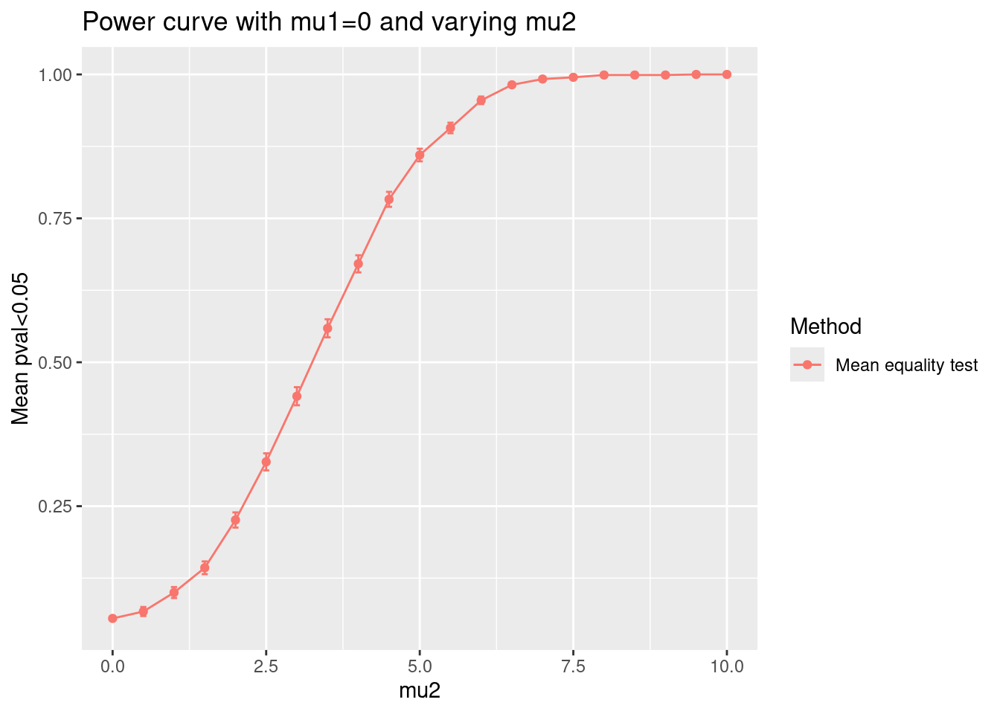

library(simulator)My Simulation
This is a knitr report generated by the simulator to describe your simulation. Knitting this file will rerun the simulation if any of the code files have been modified since the simulation object was last created.
Main simulation
name_of_simulation <- "normal-mean-test"
sim <- new_simulation(name = name_of_simulation,
label = "Test of mean") %>%
generate_model(make_my_model_normal, seed = 13,
n = 20,
mu2 = as.list(seq(0,10,by=0.5)),
mu1=0,
sig=5,
vary_along="mu2") %>%
simulate_from_model(nsim = 1000) %>%
run_method(list(t_test)) %>%
evaluate(list(pval_loss))We can make plots.
And tables too.
tabulate_eval(sim, "p_value", output_type = "markdown",
format_args = list(digits = 5))| Mean equality test | |
|---|---|
| normal | 0.055 (0.0072130) |
| normal | 0.067 (0.0079103) |
| normal | 0.100 (0.0094916) |
| normal | 0.143 (0.0110758) |
| normal | 0.226 (0.0132325) |
| normal | 0.327 (0.0148422) |
| normal | 0.441 (0.0157088) |
| normal | 0.559 (0.0157088) |
| normal | 0.671 (0.0148654) |
| normal | 0.783 (0.0130415) |
| normal | 0.860 (0.0109782) |
| normal | 0.907 (0.0091889) |
| normal | 0.955 (0.0065588) |
| normal | 0.982 (0.0042064) |
| normal | 0.992 (0.0028185) |
| normal | 0.995 (0.0022316) |
| normal | 0.999 (0.0010000) |
| normal | 0.999 (0.0010000) |
| normal | 0.999 (0.0010000) |
| normal | 1.000 (0.0000000) |
| normal | 1.000 (0.0000000) |
plot_eval_by(sim, "p_value", varying = "mu2", main = "Power curve with mu1=0 and varying mu2")
Components
Models
make_my_model_normal <- function(n, mu1, mu2, sig) {
new_model(
name = "normal",
label = sprintf("normal"),
params = list(n = n, mu1 = mu1, mu2 = mu2, sig = sig),
simulate = function(n, mu1,mu2, sig, nsim) {
# this function must return a list of length nsim
x1 <- mu1 + sig * matrix(rnorm(nsim * n), n, nsim)
x2 <- mu2 + sig * matrix(rnorm(nsim * n), n, nsim)
li1 <- split(x1, col(x1))
li2 <- split(x2, col(x2))
lapply(1:nsim, function(i) {
cbind(li1[[i]], li2[[i]])
})
}
)
}Methods
t_test <- new_method(
name = "t-test",
label = "Mean equality test",
method = function(model, draw) {
list(pvalue = t.test(draw[, 1], draw[, 2], paired = TRUE)$p.value)
}
)Metrics
pval_loss <- new_metric(
name = "p_value",
label = "pval<0.05",
metric = function(model, out) {
mean(out$pvalue < 0.05)
}
)Conclusion
To cite the simulator, please use
citation("simulator")To cite package ‘simulator’ in publications use:
Bien J (2016). “The simulator: An Engine to Streamline Simulations.” arXiv:1607.00021. https://arxiv.org/abs/1607.00021.
A BibTeX entry for LaTeX users is
@Article{, title = {The {simulator}: An Engine to Streamline Simulations}, author = {Jacob Bien}, year = {2016}, url = {https://arxiv.org/abs/1607.00021}, journal = {arXiv:1607.00021}, }